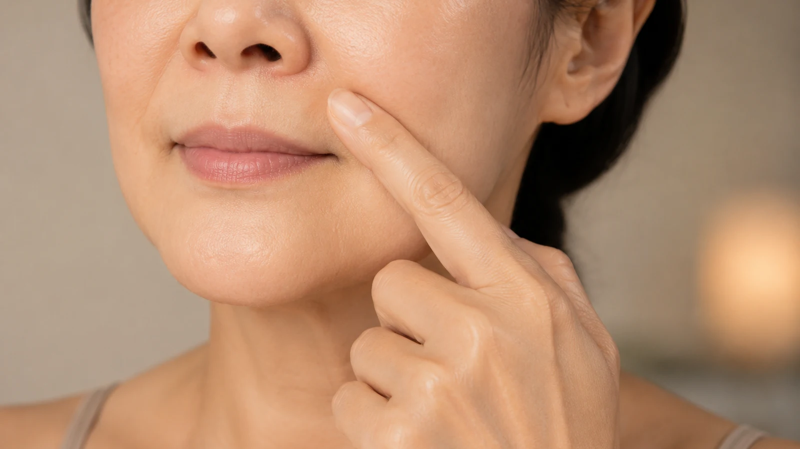
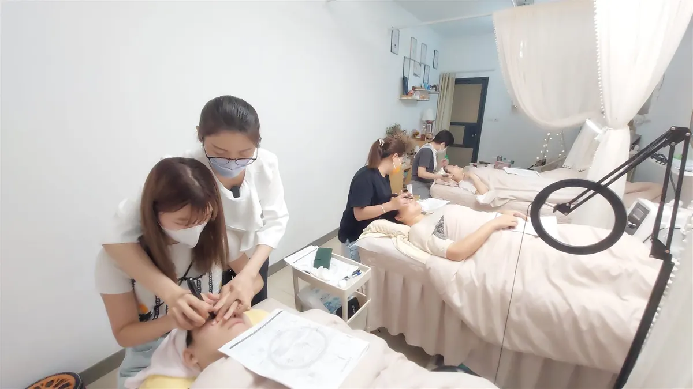

The Bojin Journal · Cheeks & Smile Lines
Are Nasolabial Folds Permanent? What Can and Can’t Soften Them

“Just tell me the truth,” a student said, pressing the line that runs from her nose down past the corner of her mouth. “Is this ever going away?” The straight answer is: partly stuck, partly not. Most advice treats the fold as one thing, when it’s really two things stacked together, and only one of them is yours to change by hand.
Everyone has a nasolabial fold; how deep it looks is partly changeable. Tension around the mouth and puffiness in the cheek above make it read deeper, and gentle self-care about twice a week, about a minute per side, can ease those for a while. Volume lost from the cheek over the years doesn’t come back by hand. A mouth that droops suddenly on one side is an emergency. This is self-care, not medical care.
The hinge and the pillow
Picture the fold as a hinge in a piece of upholstery, with a pillow of stuffing in the cheek above it. Two separate things decide how deep the fold looks. The hinge is the crease itself, held tight by the muscles around the cheek and mouth, and it looks deeper when the cheek above is puffy. The pillow is the cushion of volume that used to sit high in the cheek. Over the years it flattens and slides down, and the hinge creases harder because there’s less holding it open.
Your hands can ease the hinge. They can’t re-stuff the pillow. So the fold can soften, but it won’t vanish, and anyone promising it will is selling something.
Which lines are which?
| What you see | What it usually is | What to do |
|---|---|---|
| A fold from the side of the nose to the mouth corner, there at rest | Nasolabial fold (smile line) | This guide |
| The same line, but only when you smile | Normal expression | Nothing to fix |
| Lines running down from the mouth corners | Marionette lines | See mouth corners turning down |
| One side of the mouth drooping suddenly, or slurred speech | Possible stroke | Call 911 right away |
Habits that deepen the fold
- Sleeping on the same side. If one fold is deeper, notice which cheek spends the night on the pillow.
- Sun without protection. The American Academy of Dermatology recommends daily sunscreen and not smoking to reduce premature skin aging (AAD).
- Clenching and tight lips. A tense mouth pulls the hinge tighter. At rest, your lips can just touch.
- Big weight swings. Losing weight quickly can take volume from the cheek along with it.

A 10-second fold check
- At rest, compare the two sides. Is one fold deeper? Start on that side.
- Lie back on a pillow and look in a hand mirror. If the fold softens a lot when you lie down, much of it is the cheek above settling, the pillow part. If it barely changes, the crease itself is set deeper.
One honest note: fingertips and most home tools mostly move the top layer of skin, a millimeter or two deep. The fold’s tension comes from muscles around the mouth and cheek, and in my classes it often connects to the jaw. That’s why pressing harder into the line never helps, and why the full method works in a set order.
What can help, honestly
| Approach | What it works on | What to expect |
|---|---|---|
| Creams and daily sunscreen | The skin surface and future sun damage | Comfort and prevention; they won’t change the fold’s shape |
| Gentle self-care along the cheekbone | Tension and morning puffiness around the fold | A softer-looking fold for a while; about twice a week |
| Changing the habits above | Sleep side, clenching, sun | Less deepening over time; costs little |
| Filler or other procedures | Lost volume | A medical decision; talk to a qualified professional |
One gentle line tonight
Work beside the fold, not in it. Find the lower edge of your cheekbone with a fingertip, starting beside your nose. With a little cream, glide lightly along that edge, from beside the nose out to just in front of your ear. About a minute per side, slow and comfortable. Never dig into the crease itself.
“Most people can’t find the cheekbone line at first. They end up a little too low or too high, and if you miss that line, you won’t feel much from it.”Yu-Ting Lan, on new students
See this line drawn on a face, with its start and end points, on the Cheeks & Smile Lines guide. It’s one line of a longer routine; the full method works the face in a set order.
Honest expectations, and a safety note
Done about twice a week, many women notice the fold reads a little softer, especially on puffy mornings, gently and for a while. It won’t refill lost volume, and it isn’t filler. If the volume part bothers you, a qualified professional can talk you through options; self-care can sit alongside that.
Quick answers
Are nasolabial folds permanent?
The fold itself is part of how every face is built, so in that sense, yes. How deep and set it looks is partly changeable: the tension and puffiness around it respond to gentle care for a while, while the volume lost from the cheek above doesn't come back by hand.
Are smile lines the same as nasolabial folds?
Usually, yes. In everyday American English, "smile lines" and "laugh lines" mostly mean the folds from the sides of the nose to the corners of the mouth. Lines that run down from the mouth corners are a different thing, often called marionette lines.
Why don't creams change my folds?
A cream works on the skin's surface. The fold is shaped by the tension of the muscles around the mouth and the volume in the cheek above it, and neither lives on the surface. Daily sunscreen is still worth it, because it protects the skin from sun damage that deepens lines over time.
Should I try self-care or filler?
They do different jobs. Self-care can ease the tension and morning puffiness that make the fold read deeper. Filler adds volume, which hands can't. If you're considering filler, that's a conversation with a qualified professional; self-care can sit alongside it.
How often should I work on my cheeks?
About twice a week, about a minute per side, gliding lightly along the lower edge of the cheekbone. Never dig into the fold itself.
Check your cheeks, one side at a time
The free 5-Zone Self-Check PDF has a page for your cheeks and mid-face, with a one-side test you can try at your mirror. If you want to see the method’s pace first, the free 1:18 demo shows Yu-Ting working above the brow.
Get the free 5-Zone Self-Check PDFPart of the Cheeks & Smile Lines guide: a 10-second check, the starting route, and related guides for this area.
Yu-Ting Lan is a Taiwan-based international bojin instructor and the founder of Héhé Studio. She has taught her bojin method to more than a thousand students, from complete beginners to grandmothers, across Taiwan, Hong Kong and Malaysia.